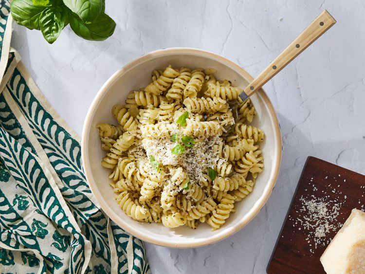

Pesto Pasta

Pesto pasta is simple to make and full of flavor. This recipe is perfect for busy weeknights and comes together
in just 15 minutes. Use any pasta, and add as much pesto sauce as you like. Enjoy topped with plenty of Parmesan
cheese.
Submitted by Lauren
Prep Time:
5 mins
Cook Time:
10 mins
Total Time:
15 mins
Servings:
8
Ingredients
1 (16 ounce) package pasta
2 ½ tablespoons pesto or more to taste
freshly ground black pepper to taste
2 tablespoons grated Parmesan cheese
Directions
-
Gather all ingredients.
-
Fill a large pot with lightly salted water and bring to a rolling boil. Stir in pasta and return to a
boil. Cook pasta uncovered, stirring occasionally, until tender yet firm to the bite, about 8 to 10
minutes. Drain and transfer into a large bowl.
-
Meanwhile, heat oil in a frying pan over medium-low heat. Add onion; cook and stir until softened, about
3 minutes.
- Stir in pesto, salt, and pepper until warmed through.
- Add pesto mixture to hot pasta; stir in grated cheese and toss well to coat.